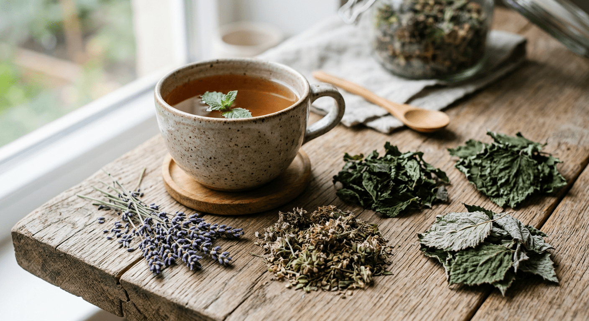

Вечерний сбор
Летнее настроение
Мягкий чай из листьев и ягод черной смородины, листьев вишни, цветков ромашки и лаванды. Помогает замедлиться после дня. Лёгкий антидепрессивный эффект. Улучшает сон, но не вызывает сонливости, поэтому можно пить в любое время.
50 г
10 BYN
Смотреть в каталоге